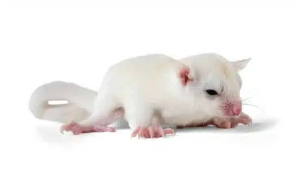
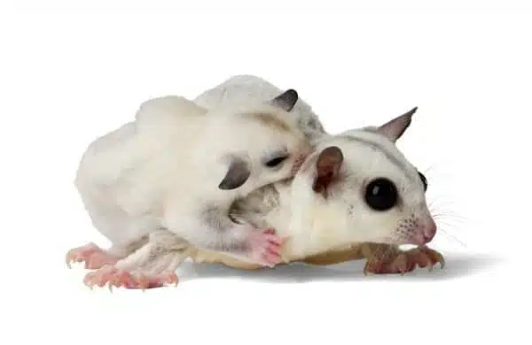

ชูการ์ไกรเดอร์นอมอล (Standard Grey)

สีที่นิยมมากที่สุดสำหรับชูการ์ไกลเดอร์ ขนของชูการ์ไกลเดอร์มีสีเทาเป็นหลัก มีลำตัวสีเทาและมีแถบหลังและปลายหางสีเทาเข้มถึงน้ำตาลเข้ม มีวงแหวนสีเข้มรอบดวงตาและมีแถบสีเข้มอยู่ใต้หู
1. ชูการ์ไกรเดอร์แบล็คบิวตี้ (Black Beauty Sugar Glider)
ลักษณะของชูการ์ไกรเดอร์แบล็คบิวตี้ มีสีและลวดลายทั่วไป แต่โดยรวมแล้วมีโทนสีที่เข้มกว่าชูการ์ไกรเดอร์นอมอล ชูการ์ไกลเดอร์เหล่านี้มีวงแหวนสีเข้มรอบดวงตา ซึ่งบางครั้งเรียกว่า “อายไลเนอร์” เส้นที่ลากไปตามลำตัวของชูการ์ไกลเดอร์เป็นสีดำ และแม้แต่ท้องของชูการ์ไกลเดอร์ก็ยังมีโทนสีเข้มกว่า
2. ชูการ์ไกลเดอร์ไลออน (Lion Sugar Glider)
ชูการ์ไกลเดอร์ไลออนมีลักษณะคล้ายกับ ชูการ์ไกรเดอร์นอมอล เล็กน้อย แต่ชูการ์ไกลเดอร์ไลออนมีขนสีน้ำผึ้งมีใบหน้าที่โค้งมนและจมูกที่สั้นกว่า ทำให้ใบหน้าของพวกเขามีรูปร่างเหมือนสิงโต ขนของพวกมันส่วนใหญ่เป็นสีเทา
3. ชูการ์ไกรเดอร์ชินนามอน (Cinnamon Sugar Glider)
ชูการ์ไกลเดอร์ชินามอนมีสีน้ำตาลอ่อนกว่าลำตัวโทนสีน้ำตาลแดงทั่วร่างกาย ที่ขนโดยรวมมีแถบสีน้ำตาลแดงเข้ม หลายครั้งที่สีนี้เกิดจากการเปลี่ยนสีของขนโดยรวมอันเป็นผลมาจากกินอาหารที่ไม่ดี
ชูการ์ไกรเดอร์ลูซิสติก (Leucistic)

จะมีลักษณะขนเป็นสีขาวล้วน ไม่มีลายหรือแถบที่หู ดวงตามีตาสีดำ หากต้องการผสมพันธุ์ต้องหาคู่ที่มียีนเดียวกันในการผสมพันธุ์ เพื่อเพาะพันธุ์ชูการ์ไกรเดอร์ลูซิสติก
ชูการ์ไกรเดอร์โมซาอิ (Mosaic)

ชูการ์ไกรเดอร์โมซาอิเป็นหนึ่งในสายพันธุ์ของชูก้าไรเดอร์ ที่มีเอกลักษณ์มากที่สุดเพราะสามารถมีรูปแบบที่หลากหลาย ชูก้าโมซาอิมีสายพันธุ์ที่แตกต่างแยกออกมาอีก 5 สายพันธุ์ ได้แก่
1. ชูก้าไกรเดอร์โมซาอิคพายด์ (Piebald Mosaic)
- ส่วนมากจะมีสีขาว
- ลำตัวมีสีดำเทา
- ลวดลายสลับสีบนตัวไม่สม่ำเสม
2. Silver Mosaic
- มีขนสีเทาอ่อนบริเวณลำตัว
3. ชูก้าไกรเดอร์โมซาอิคริงเทล (Ringtail Mosaic)
- มีลวดลายของวงแหวนที่หาง
- วงแหวนที่หางมีตั้งแต่สีดำจนถึงสีขาว
4. ชูก้าไกรเดอร์ไวท์โมซาอิ (White Mosaic)
- มีขนสีขาวสามารถเห็นได้ชัด
- อาจมีจุดดำที่หูตามขนาดเล็กๆ
- มีลักษณะเหมือนชูการ์ไกรเดอร์ลูซิสติก
5. ชูก้าไกรเดอร์แพลตทินั่มโมซาอิ (True Platinum Mosaic)
- มีสีขาวและปลายหางมีวงแหวนเล็กน้อย
- มีสีเทาขึ้นตามหลังและศีรษะ
ชูการ์ไกรเดอร์ไวท์เฟส (White Face Characteristic)

ชูการ์ไกรเดอร์ไวท์เฟสไวท์เฟสไม่ถือเป็นสีเฉพาะ แต่เป็นลักษณะเด่นที่ปรากฏบริเวณใบหน้าของชูก้าไรเดอร์ ไม่มีแถบสีบริเวนใบหูและคาง ซึ่งจะทำให้หน้าดูขาวมากขึ้นเมื่อเทียบกับสี ชูการ์ไกรเดอร์นอมอล ทั่วไป ใบหน้าจะมีลักษณะเด่นเป็นสีขาว สามารถผสมพันธุ์กับสีไหนก็ได้ เนื่องจากมียีนที่โดนเด่น และเป็นชูก้าสายพันธุ์เดียวที่สร้างยีนหน้าสีขาว